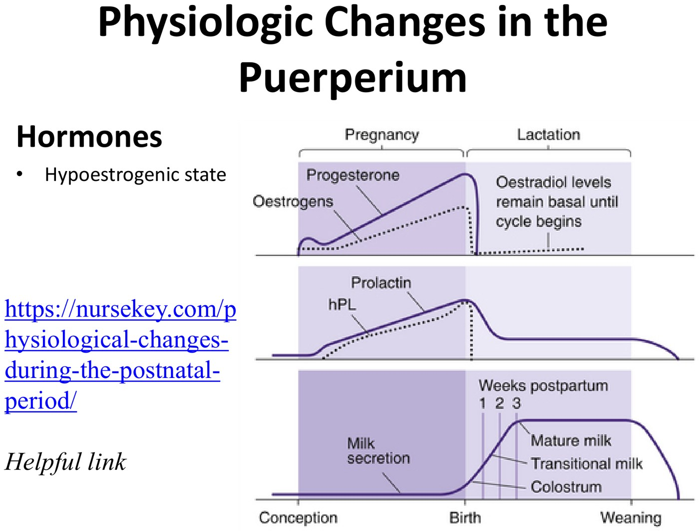
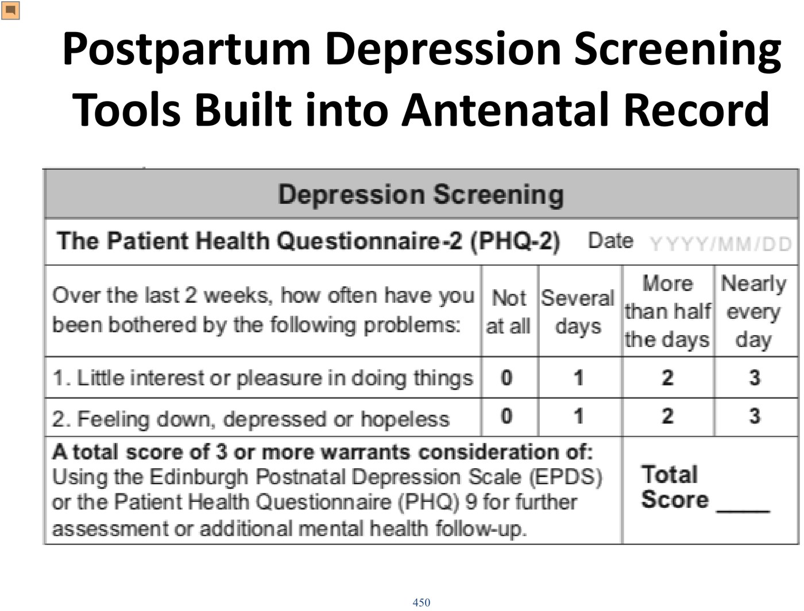
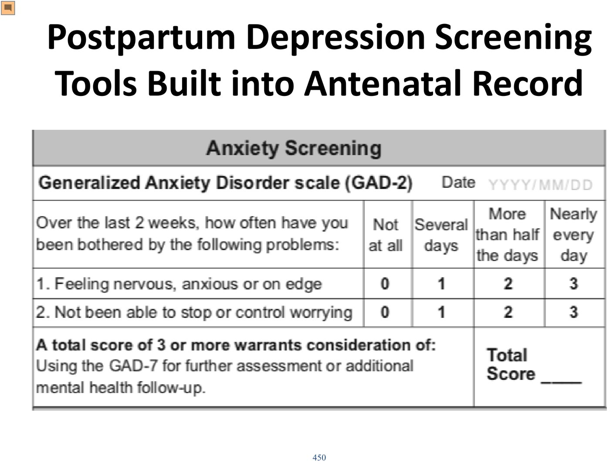
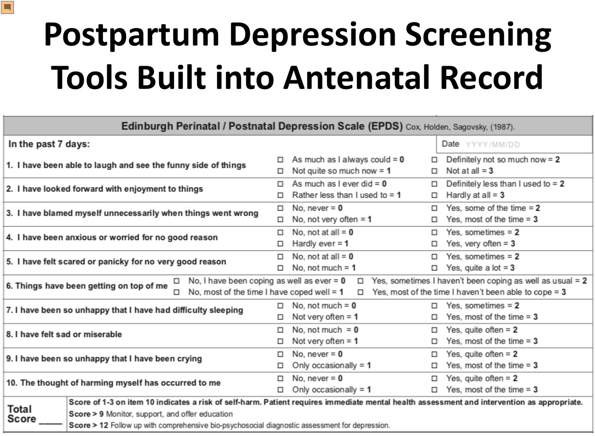
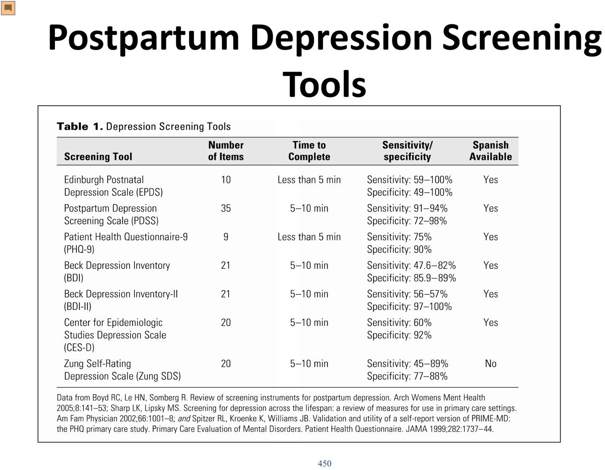

Going home: usually 1–2 days after a vaginal birth, 2–3 after a caesarean. Early discharge (2–6 h minimum) is only safe with close community follow-up. Don't discharge with active preeclampsia, PPH, fever or an unstable medical condition.
The timetable: cervix reforms in 1 week · uterus back to size by 4 weeks · endometrium by 3 weeks · placental site by 6 weeks · lochia (rubra → serosa → alba) up to 56 days · blood volume by 1 week · normal micturition by 3 months.
Contraception from 6 weeks: the first ovulation comes before the first period, and lactational amenorrhea isn't reliable. No estrogen before 21 days (VTE).
Mood: blues (up to 85%, peak days 2–4, gone by 2 weeks) ≠ postpartum depression (10–20%, within 6 months; suspect if the blues last > 2 weeks or are severe) ≠ psychosis (1–4/1000). Prior depression → 30% recurrence. Screen with PHQ-2, GAD-2 and EPDS.
Puerperal infection = > 38.0 °C on any 2 of the first 10 days, excluding the first 24 h. Endometritis leads (caesarean in labour 30%, elective 7%, vaginal 3%). VTE risk is highest postpartum (9% of maternal deaths) → LMWH.
Describe the timing and changes that occur in the uterus.
Describe the changes that occur in the breast.
Explain when ovulation and pregnancy may occur.
Explain the hormonal state over the first six weeks.
List reasons that sleep is altered.
List risk factors for postpartum depression (PPD).
Identify tools to assess PPD.
Identify issues with perineal care and healing after birth.
Dr. Laura Sovran, general obstetrics & gynecology. One 36-minute recording and a 36-slide deck; Elentra lists 37 minutes. The breastfeeding physiology itself is in 6.9.
Going Home
Stay
Detail
Average
Vaginal birth 1–2 days · caesarean 2–3 days. Babies have bloodwork at 24 h.
Early (2–6 h minimum)
Needs close community follow-up, usually by midwives. Without it there is more neonatal morbidity and mortality: deaths from cardiac causes, infection and SIDS, and more feeding problems. The risk is the baby's, which is why early discharge is offered after a stillbirth.
Before she goes
Check bleeding, bowel, bladder and baby care
Discharge < 48 h: maternal criteria
Neonatal criteria
Knows perineal care · no complication needing treatment or observation · mobile, pain controlled (not pain-free) · bowel and bladder working · RhIg (if Rh− with an Rh+ baby) and MMR (if not rubella-immune) given · can feed the baby · contraception advice · ongoing care provider identified · safe home · knows community resources
Term and appropriate for gestational age · no sepsis · stable temperature · feeding well · physical exam within 12 h · has urinated · meds and immunizations given (e.g. hepatitis B vaccine if a family member is positive) · metabolic screen at 24 h · mother able to care for the baby · community provider arranged, first visit within ~72 h
Maternal contraindications to discharge (while active): preeclampsia (uncontrolled BP), PPH (still bleeding heavily), fever, an unstable medical condition.
Perineum, Bowels and Breasts
Problem
Advice
Tears / episiotomy
Keep clean and dry: sitz baths or soaks in warm or cool (not hot or cold) water; change pads often; a peri-care bottle to rinse after every void and bowel movement for 2–3 weeks. If infected, the repair can open (dehiscence) and heal by secondary intention over weeks to months.
Constipation, hemorrhoids
Fibre, fluids, activity. Laxatives (softeners, stimulants, osmotics, lubricants) are especially useful on narcotics after a caesarean, and when breastfeeding draws fluid into milk.
3rd/4th-degree tear
No rectal medications: no suppositories, no enemas
Breasts
Engorgement in the first days. Colostrum from day 2 to ~day 4; lactose rises at 30–40 h; milk at 3–5 days. Mastitis risk lasts as long as she feeds (6.9).
Life adjustment
Exhaustion, relationship change, stress: “with your first you will think you'll break them no matter what you do.”
The Puerperium: What Goes Back, and When
System
Change
Timing
Uterus
Uterine vessels obliterated by hyaline change
—
Cervical canal reforms; 50% of HSIL regress
1 week
Corpus involutes to non-pregnant size (cells shrink)
4 weeks
Endometrium regresses and regenerates
3 weeks
Placental site involutes
6 weeks
Lochia: rubra (red) → serosa (rust) → alba (white)
Up to 56 days
Urinary
Diuresis
Days 2–5
Dilated ureters and renal pelvis back to normal
2–8 weeks
Normal micturition. Early atony, incomplete emptying and UTI are common; stress incontinence improves as estrogen returns.
3 months
Blood & fluid
Leukocytosis settles
First few days
Blood volume back to pre-pregnancy
1 week
Cardiac output stays up (more venous return from the contracting uterus → ↑ stroke volume)
48 h
Cardiovascular changes back to baseline
2 weeks
Weight
Baby + placenta 5–6 kg; diuresis 2–3 kg; most are at pre-pregnancy weight by 6 months
6 months

A hypoestrogenic state. Delivering the placenta drops estrogen and progesterone sharply. Estradiol stays basal until cycling resumes, which links to the insomnia, the urinary symptoms and the milk changes. Slide from the deck.
Sex, Ovulation and Contraception
Question
What the lecture says
When can she have sex?
No evidence-based minimum. Most wait for the 6-week visit; it's her preference. Very early intercourse may theoretically raise the risk of endometritis.
When does ovulation return?
Not breastfeeding: ovulation and menses around 6–8 weeks. Breastfeeding: highly variable, from 6–8 weeks to not until weaning. Either way, ovulation comes before the first period.
Lactational amenorrhea?
Not to be relied on. Encourage at least condoms.
When to start contraception
By 6 weeks: after that, everyone should consider herself at risk of pregnancy
Which method
No estrogen before 21 days (VTE risk is far above baseline). Estrogen may reduce milk quantity and quality; the evidence is weak, but offer progestin-only or barrier methods if she's worried. Barrier, combined hormonal (pill, patch, ring, from 3 weeks), POP, Depo-Provera and IUDs (hormonal or copper) are all options, depending on family planning.
Sleep
Why sleep is broken
Feeds day and night; the longest gap is 3–4 h, and a feed itself can take 30–60 min
Stress, adjusting, worry about the baby
Light at night during infant care resets the sleep cycle
The hypoestrogenic state (as in menopause)
The brain shifts to be more alert to the baby
What helps
Sleep hygiene: no caffeine or alcohol
Don't ruminate: write it down for the morning
Can't sleep? Leave the room; do something quiet in dim light (a word search)
No blue-light screens 1–2 h before sleep; dim light for night feeds
CBT if persistent · rule out a mood disorder
Postpartum Mood
“Blues”
Postpartum depression
Postpartum psychosis
How common
Up to 85%
10–20%
1–4 per 1000
Timing
Onset days 3–10, peak days 2–4, self-limited, ≤ 2 weeks
Major depression within 6 months of delivery. Suspect if the blues last > 2 weeks or are severe in the first 2.
Previous depression (perinatal or not): 30% recurrence · high postnatal stress (NICU, stillbirth, conflict, feeding problems) · poor social and financial support · age < 25 · single · family history of PPD or psychiatric illness · intimate partner violence · unintended pregnancy · perinatal anxiety · perinatal sleep disturbance
Screening tools, built into the Ontario antenatal record

PHQ-2: two questions, 0–3 each. ≥ 3 → do the EPDS or PHQ-9. Slide from the deck.

GAD-2 for anxiety. ≥ 3 → GAD-7. Slide from the deck.

EPDS: 10 items about the past 7 days. Any positive answer to item 10 (self-harm) needs immediate assessment. Slide from the deck.

The longer tools compared. The EPDS (10 items, < 5 min) is the one built for the perinatal period. Slide from the deck.
Complications After Discharge
Problem
Definition / features
Management
Delayed PPH
More bleeding > 24 h postpartum: bright red bleeding returns, ± fever, chills, tender uterus. DDx: endometritis, retained products, infected tear/episiotomy.
Antibiotics; ultrasound for RPOC; a uterotonic (misoprostol) for a small piece of tissue vs D&C for a larger one. Retained tissue gets infected, hence the antibiotics.
Puerperal infection
Temp > 38.0 °C on any 2 of the first 10 days, excluding the first 24 h, taken orally at least QID. The most common postpartum complication; 4% of maternal deaths worldwide.
By source: endometritis, UTI (catheter, atony), caesarean or perineal wound, mastitis, pyelonephritis, thrombophlebitis, respiratory (atelectasis, aspiration, pneumonia), necrotizing fasciitis (days 3–5)
VTE
Raised in pregnancy, greatest postpartum. 0.5–3 per 1000 pregnancies. DVT, PE, septic pelvic thrombophlebitis. 9% of maternal deaths.
LMWH
Endometritis
Risk factors
Caesarean: 30% if non-elective (in labour), 7% if elective; vaginal 3% · prolonged labour or ROM · multiple cervical exams · internal monitoring (scalp clip, IUPC) · manual removal of the placenta
Lethal causes
Clostridium sordellii (TSS-like) · C. perfringens (necrotizing endomyometritis) · streptococcal or staphylococcal toxic shock
Treatment
1. Amoxicillin-clavulanate 875 mg PO BID × 7–10 d (one drug, twice a day: easy with a newborn) · 2. Cephalexin 500 mg QID + metronidazole 500 mg BID × 7–10 d · 3. Clindamycin + gentamicin IV if septic
The 6-Week Visit
The Ontario Perinatal Record has a postnatal page. It covers the birth and baby, feeding, medications, a review of systems (bladder, bowel, intercourse, lochia, menses, perineum or incision, smoking, alcohol, mood, relationships), the PPD screen and the exam.
Preventive medicine: flu shot in season · MMR if not given before discharge · tetanus · when is the next Pap?
Discuss: the transition to parenthood · contraception · pelvic floor physiotherapy · after a caesarean, the next mode of birth and pregnancy spacing · nutrition and activity (often left to family medicine).
Pelvic floor physiotherapy for everyone, antepartum and postpartum. Antenatally it means fewer severe tears and shorter pushing; postpartum, less incontinence and better pelvic-floor rehab. It starts after the 6-week check. “We're failing our patients by not discussing it,” but it's expensive (about $120 first visit, $90 after).
Built from Dr. Laura Sovran's “Postpartum Care” module: the 36-minute recording and its 36-slide deck. Most slides are text, so they are presented as tables; the figures are the hormone curve and the screening tools from the antenatal record. Caption corrections (the slides were followed): endometritis was transcribed as “endometriosis” throughout; RhIg as “rock armor”; Clavulin as “a foxglove”; cephalexin as “cephalic”; metronidazole (Flagyl) as “fragile”; C. sordellii as “Sadeghi”; lochia as “look here”; micturition as “nutrition”; and the estrogen rule came out as “should be initiated before three weeks”, where the slide says not before 21 days. The recording's VTE incidence figures were garbled and are left out; the slide's figures are used.